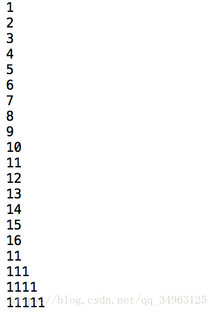

spark问题记录
IDEA运行本地模式spark出现NoClassDefFoundError及NoSuchMethodError错误
环境变量中的scala版本与spark依赖的scala版本不同（2.X不同最后一位小版本无影响）会引起此类问题。解决方法：统一这两个版本（目前spark只受scala 2.11.X支持）
Mac下.rtf文件中String转化Int失败
问题：在macOS下进行spark作业：输出文件中最大及最小数
文件结构如下：
1
2
3
4
5
6
7
8
9
10
11
12
13
14
15
16
17
18
19
20
21
22
23
24
25
26
27
28
29import org.apache.spark.{SparkConf, SparkContext}
object MaxAndMin {
def main(args: Array[String]): Unit = {
val sparkConf = new SparkConf().setMaster("local").setAppName("MaxAndMin")
val sc = new SparkContext(sparkConf)
sc.setLogLevel("ERROR")
val lines = sc.textFile("hdfs://localhost:9000/b.txt")//此处为b.rtf时报错
val result = lines.filter(_.trim.length>0).
map(line => ("key",line.trim.toInt)).//此处报错
groupByKey().
map(x => {
var max = Integer.MIN_VALUE
var min = Integer.MAX_VALUE
for(num <- x._2) {
if(num > max)
max = num
if(num < min)
min = num
}
(max,min)
}).collect.foreach(x => {
println("max:\t" + x._1)
println("min:\t" + x._2)
})
}
}
异常信息：1
2
3
4
5
6
7
8
9
10
11
12
13
14
15
16
17
18
19
20
21
22
23
24
25
26
27
28
29
30
31
32
33
34
35
36
37
38
39
40
41
42
43
44
45
46
47
48
49
50
51
52
53
54
55
56
57
58
59
60
61
62
63
64
65
66
67
68
69
70
71
72
73
74
75
76
77
78
79
80
81ERROR Executor: Exception in task 0.0 in stage 0.0 (TID 0)
java.lang.NumberFormatException: For input string: "{\rtf1\ansi\ansicpg936\cocoartf1561\cocoasubrtf400"
at java.lang.NumberFormatException.forInputString(NumberFormatException.java:65)
at java.lang.Integer.parseInt(Integer.java:580)
at java.lang.Integer.parseInt(Integer.java:615)
at scala.collection.immutable.StringLike$class.toInt(StringLike.scala:272)
at scala.collection.immutable.StringOps.toInt(StringOps.scala:29)
at MaxAndMin$$anonfun$2.apply(MaxAndMin.scala:11)
at MaxAndMin$$anonfun$2.apply(MaxAndMin.scala:11)
at scala.collection.Iterator$$anon$11.next(Iterator.scala:409)
at org.apache.spark.shuffle.sort.BypassMergeSortShuffleWriter.write(BypassMergeSortShuffleWriter.java:150)
at org.apache.spark.scheduler.ShuffleMapTask.runTask(ShuffleMapTask.scala:96)
at org.apache.spark.scheduler.ShuffleMapTask.runTask(ShuffleMapTask.scala:53)
at org.apache.spark.scheduler.Task.run(Task.scala:99)
at org.apache.spark.executor.Executor$TaskRunner.run(Executor.scala:282)
at java.util.concurrent.ThreadPoolExecutor.runWorker(ThreadPoolExecutor.java:1149)
at java.util.concurrent.ThreadPoolExecutor$Worker.run(ThreadPoolExecutor.java:624)
at java.lang.Thread.run(Thread.java:748)
18/06/23 22:27:48 ERROR TaskSetManager: Task 0 in stage 0.0 failed 1 times; aborting job
Exception in thread "main" org.apache.spark.SparkException: Job aborted due to stage failure: Task 0 in stage 0.0 failed 1 times, most recent failure: Lost task 0.0 in stage 0.0 (TID 0, localhost, executor driver): java.lang.NumberFormatException: For input string: "{\rtf1\ansi\ansicpg936\cocoartf1561\cocoasubrtf400"
at java.lang.NumberFormatException.forInputString(NumberFormatException.java:65)
at java.lang.Integer.parseInt(Integer.java:580)
at java.lang.Integer.parseInt(Integer.java:615)
at scala.collection.immutable.StringLike$class.toInt(StringLike.scala:272)
at scala.collection.immutable.StringOps.toInt(StringOps.scala:29)
at MaxAndMin$$anonfun$2.apply(MaxAndMin.scala:11)
at MaxAndMin$$anonfun$2.apply(MaxAndMin.scala:11)
at scala.collection.Iterator$$anon$11.next(Iterator.scala:409)
at org.apache.spark.shuffle.sort.BypassMergeSortShuffleWriter.write(BypassMergeSortShuffleWriter.java:150)
at org.apache.spark.scheduler.ShuffleMapTask.runTask(ShuffleMapTask.scala:96)
at org.apache.spark.scheduler.ShuffleMapTask.runTask(ShuffleMapTask.scala:53)
at org.apache.spark.scheduler.Task.run(Task.scala:99)
at org.apache.spark.executor.Executor$TaskRunner.run(Executor.scala:282)
at java.util.concurrent.ThreadPoolExecutor.runWorker(ThreadPoolExecutor.java:1149)
at java.util.concurrent.ThreadPoolExecutor$Worker.run(ThreadPoolExecutor.java:624)
at java.lang.Thread.run(Thread.java:748)
Driver stacktrace:
at org.apache.spark.scheduler.DAGScheduler.org$apache$spark$scheduler$DAGScheduler$$failJobAndIndependentStages(DAGScheduler.scala:1435)
at org.apache.spark.scheduler.DAGScheduler$$anonfun$abortStage$1.apply(DAGScheduler.scala:1423)
at org.apache.spark.scheduler.DAGScheduler$$anonfun$abortStage$1.apply(DAGScheduler.scala:1422)
at scala.collection.mutable.ResizableArray$class.foreach(ResizableArray.scala:59)
at scala.collection.mutable.ArrayBuffer.foreach(ArrayBuffer.scala:48)
at org.apache.spark.scheduler.DAGScheduler.abortStage(DAGScheduler.scala:1422)
at org.apache.spark.scheduler.DAGScheduler$$anonfun$handleTaskSetFailed$1.apply(DAGScheduler.scala:802)
at org.apache.spark.scheduler.DAGScheduler$$anonfun$handleTaskSetFailed$1.apply(DAGScheduler.scala:802)
at scala.Option.foreach(Option.scala:257)
at org.apache.spark.scheduler.DAGScheduler.handleTaskSetFailed(DAGScheduler.scala:802)
at org.apache.spark.scheduler.DAGSchedulerEventProcessLoop.doOnReceive(DAGScheduler.scala:1650)
at org.apache.spark.scheduler.DAGSchedulerEventProcessLoop.onReceive(DAGScheduler.scala:1605)
at org.apache.spark.scheduler.DAGSchedulerEventProcessLoop.onReceive(DAGScheduler.scala:1594)
at org.apache.spark.util.EventLoop$$anon$1.run(EventLoop.scala:48)
at org.apache.spark.scheduler.DAGScheduler.runJob(DAGScheduler.scala:628)
at org.apache.spark.SparkContext.runJob(SparkContext.scala:1918)
at org.apache.spark.SparkContext.runJob(SparkContext.scala:1931)
at org.apache.spark.SparkContext.runJob(SparkContext.scala:1944)
at org.apache.spark.SparkContext.runJob(SparkContext.scala:1958)
at org.apache.spark.rdd.RDD$$anonfun$collect$1.apply(RDD.scala:935)
at org.apache.spark.rdd.RDDOperationScope$.withScope(RDDOperationScope.scala:151)
at org.apache.spark.rdd.RDDOperationScope$.withScope(RDDOperationScope.scala:112)
at org.apache.spark.rdd.RDD.withScope(RDD.scala:362)
at org.apache.spark.rdd.RDD.collect(RDD.scala:934)
at MaxAndMin$.main(MaxAndMin.scala:23)
at MaxAndMin.main(MaxAndMin.scala)
Caused by: java.lang.NumberFormatException: For input string: "{\rtf1\ansi\ansicpg936\cocoartf1561\cocoasubrtf400"
at java.lang.NumberFormatException.forInputString(NumberFormatException.java:65)
at java.lang.Integer.parseInt(Integer.java:580)
at java.lang.Integer.parseInt(Integer.java:615)
at scala.collection.immutable.StringLike$class.toInt(StringLike.scala:272)
at scala.collection.immutable.StringOps.toInt(StringOps.scala:29)
at MaxAndMin$$anonfun$2.apply(MaxAndMin.scala:11)
at MaxAndMin$$anonfun$2.apply(MaxAndMin.scala:11)
at scala.collection.Iterator$$anon$11.next(Iterator.scala:409)
at org.apache.spark.shuffle.sort.BypassMergeSortShuffleWriter.write(BypassMergeSortShuffleWriter.java:150)
at org.apache.spark.scheduler.ShuffleMapTask.runTask(ShuffleMapTask.scala:96)
at org.apache.spark.scheduler.ShuffleMapTask.runTask(ShuffleMapTask.scala:53)
at org.apache.spark.scheduler.Task.run(Task.scala:99)
at org.apache.spark.executor.Executor$TaskRunner.run(Executor.scala:282)
at java.util.concurrent.ThreadPoolExecutor.runWorker(ThreadPoolExecutor.java:1149)
at java.util.concurrent.ThreadPoolExecutor$Worker.run(ThreadPoolExecutor.java:624)
at java.lang.Thread.run(Thread.java:748)
可以看到，第十一行的map(line => ("key",line.trim.toInt)）
类型转换异常，在什么时候会抛这个异常呢？
在“abc”.toInt时会出现此异常，推测原因是.rtf文件不是一个纯文本格式，.trim()方法消除空格后还存在一些奇怪的东西，所以.toInt会抛异常。
解决方法：用txt格式文件作为源文件。
在macOS下编辑txt：点击打开链接